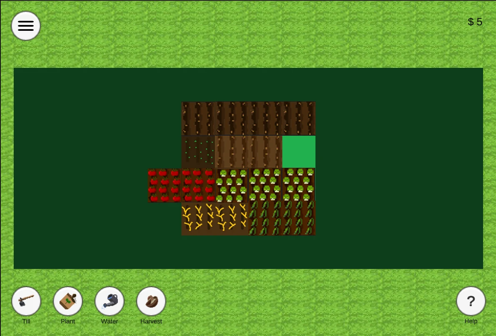
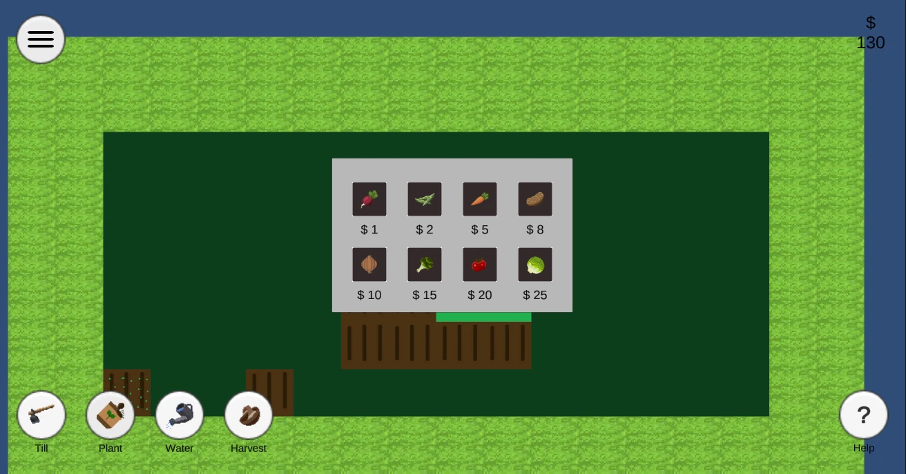
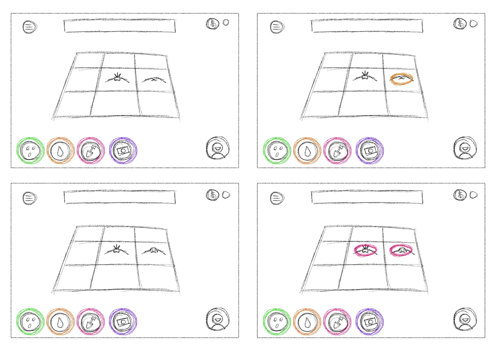
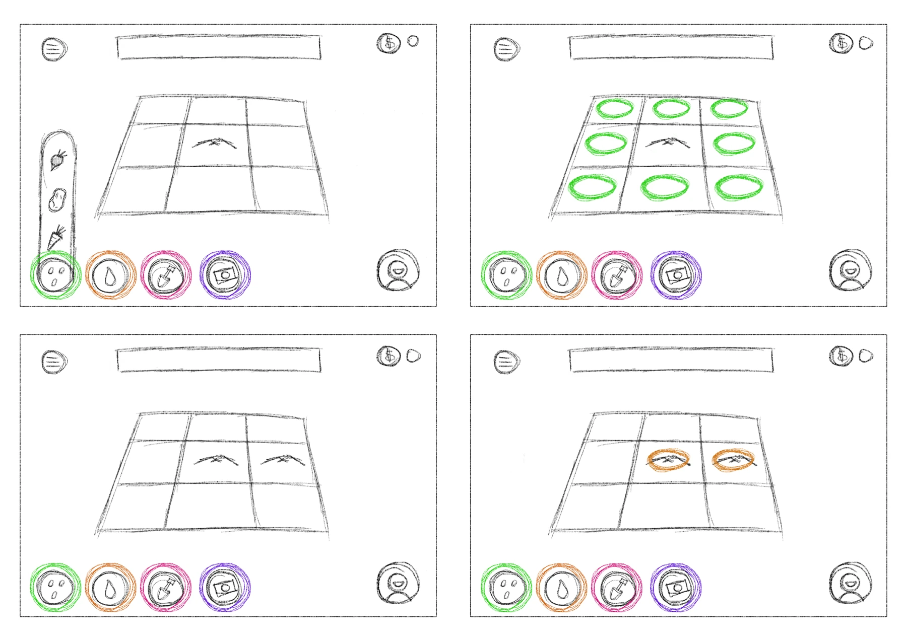
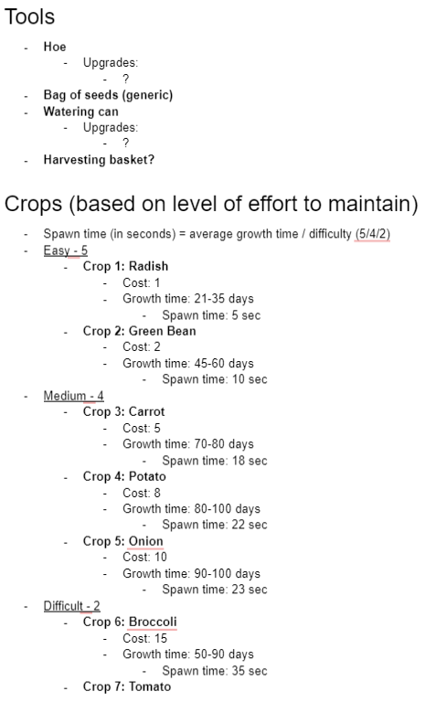

Loop & economy
I helped design crops at different price points and expandable plots as part of the four-person team.
Farming Simulator
Till, plant, harvest, and reinvest in a growing farm.

Harvest the Land introduces farming fundamentals: till land, plant crops, and reinvest harvests into expanding the farm or buying higher-yield seeds.
The loop draws inspiration from everyday errands at the grocery store, bank, and farm, condensed into one gameplay cycle.
Personal ownership, shared work, and supporting evidence.
I helped design crops at different price points and expandable plots as part of the four-person team.
I designed UI icons, tile-state changes, and tool-specific cursor effects, and organized the project’s art assets.
The systems, decisions, and feedback that shape the player experience.

Players till soil, plant seeds, water crops, and harvest them for currency. That income can buy different crops or open more land, connecting each harvest to the next planting decision.


The team explored the loop with paper prototypes on iPad. The drawings follow the toolbar, changing ground states, and growing crops before the implemented version.
The archived report records five playtesters. Four preferred a starting plot with more land to unlock; one enjoyed carving out a farm. Requests also included clearer tool order, changing cursors, and key bindings. The report recommends progression and usability changes; it does not establish that every recommendation was implemented.
Gameplay and production evidence, with captions and contributor credits where relevant.

{kind=link}
{kind=link}